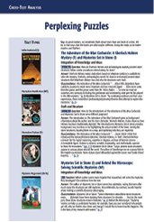
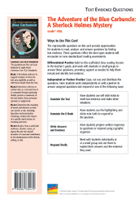

Related Resources
Text-Dependent Comprehension
Other Titles in This Topic Set
Online Resources
Teacher’s Guide
Lexile® 950L
The Adventure of the
Blue Carbuncle:
A Sherlock Holmes Mystery
ELA Strategies and Skills
Text-Dependent Comprehension Strategies
Extend Language Knowledge
Vocabulary Strategies
LEXILE® is a trademark of MetaMetrics, Inc., and is registered in the United States and abroad.
Common Core Standards © Copyright 2010. National Governors Association Center for Best Practices and Council of Chief State School Officers. All rights reserved.
© Benchmark Education Company, LLC. All rights reserved. Teachers may photocopy the reproducible pages for classroom use. No other part of the guide may be reproduced or transmitted in whole or in part in any form or by any means, electronic or mechanical, including photocopy, recording, or any information storage or retrieval system, without permission in writing from the publisher.
|
What Makes This Text Complex? |
|
|
Purpose and Levels 3 |
The purpose includes explaining or interpreting information revealed over the course of the story. (pp. 2–5 and 7)★ |
|
Structure 4 |
The book follows the traditional structure of a mystery, but because it is excerpted in three parts, it requires students to use summaries to understand the events that occur in the gaps. (pp. 2–5)★ |
|
Language Conventionality 3 |
The story uses unfamiliar vocabulary and British vernacular, along with figurative language. (p. 10)★ |
|
Knowledge 4 |
The character of Sherlock Holmes may not be familiar to some students. The mystery involves abstract and theoretical concepts. |
Qualitative text complexity dimensions from the CCSS are scored on the following scale: 1–Low; 2–Middle Low; 3–Middle High; 4–High.
★Citations refer to pages within this teacher’s guide that address the specific text complexity.
Vocabulary List
*General academic word
**Domain-specific word
Writing
Narrative Fiction: Mystery
Topic Set:
Perplexing Puzzles
Scaffolded Preview for
ELs and Struggling Readers
Support students to access the text by orally introducing academic vocabulary, language structures, and concepts.
Pages 2–3. These pages give background information about the author. The main character, Sherlock Holmes, is known for making informed guesses based on his observations.
Page 4. Page 4 tells what has happened so far. What happened to the man Peterson saw on the street? What did the man drop? What surprising discovery did Peterson’s wife make?
First Read
Read Part 1 (pp. 2–12) RL.6.1, RL.6.2, RL.6.3, W.6.10, SL.6.1a, SL.6.1b, SL.6.1c, SL.6.1d
Preview and Make Predictions
Invite students to flip through the book and view the illustrations, or display the e-book and preview the pages together.
Read aloud the features of a mystery on the inside front cover. Then have students turn to the Table of Contents and look at the illustration. Invite students to read the book description on the back cover.
Ask: How do these features help you figure out what this book might be about? Based on the illustration, what do you think a blue carbuncle is? What might happen to it?
If your students need more support, use the Scaffolded Preview provided.
Set a Purpose
Say: Let’s read pages 2–3 as an introduction to the story. Then as you read Part I, use self-stick notes to identify the main characters, setting, and key events. Look for evidence to help you figure out what happened to the blue carbuncle and who committed the crime.
Choose the reading option that best meets your students’ needs.
Summarize Main Idea and Key Details: Think and Write Together
Invite students to first summarize pages 2–3 and then summarize the key events in the rest of Part I. As a group, create a Story Elements Chart. Then, as a group, construct a summary of the key ideas in Part I. If students need more support to summarize the text, use the lesson on page 3 of this guide.
|
Characters |
Setting |
|
Sherlock Holmes, Dr. Watson, Peterson |
Holmes’s home |
|
Key Events |
|
|
Peterson tells Holmes about a man who dropped a goose and hat after being attacked. |
|
|
Peterson shows Holmes and Dr. Watson the hat and blue carbuncle that was inside the goose. |
|
|
Holmes says that the jewel was stolen and a local plumber has been accused of the crime. |
|
|
Holmes plans to find the man who dropped the hat and the goose using an ad in the newspaper. |
|
Sample Part 1 Story Elements Chart
Lesson: Determine Text Importance to Summarize
Remind students that visualizing as they read can help them identify key details and summarize what happened. Explain that this is especially important in a mystery because the author provides evidence about the crime and the criminal throughout the story. Have students turn to page 7. Reread the newspaper account on pages 7–8 together.
Ask: What did you see happen at the hotel? Who is John Horner? What is his job? Why was he called to the Countess’s hotel room? What is Horner accused of doing?
Pair students and have them write a summary of the events you read about.
Summarize Main Idea and Key Details: Think/Pair/Write/Share
Bring students together and ask several pairs of students to read their summaries aloud. As a whole group, evaluate the summaries and identify any key information that was omitted. Then write a group summary of the key ideas in Part I.
|
A doorman named Peterson tells Sherlock Holmes and Dr. Watson about seeing a man drop his hat and a goose after being attacked on the street. Peterson hopes Holmes can identify the man so that he can return the man’s hat and a blue jewel that was hidden inside the goose. Holmes reveals that the jewel was stolen, and a plumber has been charged with the crime. Holmes plans to find the man who dropped the hat and the goose by placing an ad in the newspaper. |
Sample Part 1 Group Summary
Read Part 2 (pp. 13–17) RL.6.1, RL.6.2, RL.6.3, W.6.10, SL.6.1, SL.6.3
Set a Purpose
Say: As you read Part II, use self-stick notes to identify key details about characters, setting, and key events. Think about how Holmes gathers information about Mr. Baker and where he got the goose.
Choose the reading option that best meets the needs of your students. If students need more support to access the text, use the Scaffolded Preview provided.
Summarize Main Idea and Key Details: Think/Pair/Write/Share
Invite students to share with a partner what they noted in the text. Have
them
collaborate to create a new Story Elements Chart for Part II
that lists the characters,
setting, and key events.
|
Characters |
Setting |
|
Sherlock Holmes, Dr. Watson, Mr. Baker |
Holmes’s home |
|
Key Events |
|
|
Mr. Henry Baker comes to see Holmes. |
|
|
Holmes tests Baker by asking if he wants any leftover parts of the goose. |
|
|
Baker reveals his innocence when he is happy to take home the new goose. |
|
|
Baker says he got his goose from someone named Windigate. |
|
Sample Part II Story Elements Chart
Then have pairs collaborate to write their own summary of the key ideas in Part II. If students need more support in deciding what to include in a summary, refer back to the lesson strategy taught in Part I.
Bring students together and ask several pairs of students to read their summaries aloud. As a whole group, evaluate the summaries and identify any key information that was omitted.
As a group, construct a written summary of the key ideas in Part II.
|
Mr. Henry Baker arrives at Holmes’s home to get his hat. Holmes tests Baker by asking if he wants to take the leftover parts of his goose. Baker proves his innocence by showing he has no interest in his goose and accepting the new one in its place. Baker says he got his goose from someone named Windigate. |
Sample Part II Group Summary
Read Part 3 (pp. 28–29) RL.6.1, RL.6.2, RL.6.3, W.6.10, SL.6.1, SL.6.3
Set a Purpose
Say: As you read Part III, continue to use self-stick notes to flag important information about characters, setting, and key events. Continue to look for details that show who committed the robbery and how he did it.
Choose the reading option that best meets the needs of your students. If students need more support to access the text, use the Scaffolded Preview provided.
Summarize Main Idea and Key Details: Think and Write Independently
Ask students to review the key events they flagged in Part III. Have them independently create a chart like the ones completed for the first two parts.
|
Characters |
Setting |
|
|
|
|
Key Events |
|
|
Holmes and Watson discover that the goose originally came from Mrs. Oakshott. |
|
|
James Ryder tells Holmes he wants to find out what happened to a specific goose. |
|
|
Ryder reveals how he stole the jewel, framed Horner for the crime, and hid the jewel inside one of his sister’s geese. |
|
|
Holmes believes Ryder has learned a lesson and lets him go. |
|
Sample Part III Story Elements Chart
Bring students together and ask volunteers to read their summaries aloud. As a whole group, evaluate the summaries.
|
Holmes and Watson find out that the goose Mr. Baker had came from a woman named Mrs. Oakshott. James Ryder approaches Holmes and asks what he knows about a specific goose. When Holmes says he has figured out what really happened, Ryder reveals he stole the blue carbuncle, framed Mr. Horner for the crime, and then hid the jewel in one of his sister’s geese. Holmes believes Ryder will not do something wrong again, so he lets the man go. |
Sample Part III Group Summary
Scaffolded Preview for
ELs and Struggling Readers
Support students to access the text by orally introducing academic vocabulary, language structures, and concepts.
Page 18. A young man tells Holmes he is very interested in finding out what happened to a specific goose. Why do you think this man wants to find the goose?
Page 19. Holmes reveals that this young man works at the Hotel Cosmopolitan. Why is this an important detail?
Page 23. Look at the picture on page 23. Why do you think the young man is on his hands and knees? What do you think he realizes?
Page 26. Look at the picture on page 26. How does this picture help you understand an important detail in the story? Why did the young man put the jewel in the goose? How was he going to retrieve the jewel later?
Close Reading Options
Support students to dig deeper into the text. Choose one or more of these close reading options, or choose an alternate focus that addresses your students’ needs.
Routine for Finding
Text Evidence
|
Text Evidence |
|
“A flush sprang to the white cheeks of the stranger.” (p. 19) |
|
“. . . the high, thin breathing of our new companion, and the claspings and unclaspings of his hands, spoke of the nervous tension within him.” (p. 19) |
|
“. . . he sat staring with frightened eyes at his accuser.” (p. 21) |
|
“Ryder threw himself down suddenly upon the rug and clutched at my companion’s knees.” (p. 23) |
|
“Ryder passed his tongue over his parched lips.” (p. 24) |
|
|
|
Character |
|
The scene begins with Ryder as a nervous, fearful man and ends with him being overcome by panic and desperation. |
Sample Character Graphic Organizer
Close Reading and Analysis
Close Reading Option 1: Analyze Character
RL.6.1, RL.6.2, RL.6.3, W.6.10, SL.6.1, SL.6.2, SL.6.3
Model Finding Text Evidence
Display and read aloud the close reading question.
|
What adjectives, phrases, or other words does Doyle use to describe Ryder? How do these descriptions contribute to the tone and meaning of the scene? |
Explain that in these questions readers are asked to find text evidence to identify specific words that describe Ryder and use that evidence to explain how they add to the tone and meaning of the scene.
Say: I need to find words and phrases that describe Ryder, including his appearance and behavior.
Reread page 19.
Say: On page 19, the author describes how Ryder hesitates and gives “a sidelong glance” when he gives his name. The author also says that “A flush sprang to the white cheeks of the stranger” who stood looking from side to side with “half-frightened, half-hopeful eyes” and later shows “nervous tension” as he clasps and unclasps his hands. These words show that Ryder is scared and nervous. This makes me think he is guilty and has something to hide.
Support Practice
Ask students to turn to pages 20–21.
Collaborative conversation (turn and talk). Ask students to turn to a partner and reread pages 20–21. Have students discuss which text includes words and phrases that describe Ryder, build on each other’s ideas, and ask questions for clarification.
Bring students together and invite pairs to share their text evidence and identify their words and phrases. Students may identify descriptions such as “quivered with emotion,” “staggered to his feet,” and “stood glaring with a drawn face” on page 20 and “he sat staring with frightened eyes” on page 21. Students should use this evidence to explain how the author creates a sense of fear and uneasiness as Ryder realizes that Holmes knows the truth about his crime.
Find Text Evidence Independently
Ask students to independently review pages 22–24 to identify additional words and phrases describing Ryder. Then discuss how all the evidence students found contributes to the tone and meaning of the scene. Students may identify examples such as “a crackling voice,” “threw himself down suddenly upon the rug and clutched at my companion’s knees,” and “passed his tongue over his parched lips.” Students should use text evidence to explain that the author uses the descriptions of Ryder to convey a sense of uneasiness and fear that escalates into panic and finally a sense of hopelessness or resignation.
Discuss how this close reading has helped students find the variety of words and phrases Doyle uses to describe Ryder and how these descriptions contribute to the increasing fear and panic in Part III.
Close Reading Option 2: Draw Conclusions
RL.6.1, RL.6.2, RL.6.3, W.6.10, SL.6.1, SL.6.2, SL.6.3
Model Finding Text Evidence
Display and read aloud the close reading question.
|
Using examples from the text, what are the explicit and implied
deductions Holmes makes |
Remind students that a deduction is figuring out something using evidence. Explain that the question asks readers to identify evidence of things Holmes figures out about the case.
Say: I will need to look for text evidence that shows Holmes’s direct statements about the case as well as information inferred by the reader.
Direct students to pages 5–6.
Say: On page 5, Holmes refers to the blue stone as “ the precious stone” and on page 6 he confirms that this is the jewel that was stolen from the Countess of Morcar. Holmes is able to determine the blue jewel that was inside the goose is actually the stolen blue carbuncle because he says he recognizes the jewel from reading about “its size and shape” in the newspaper “every day lately.”
Support Practice
Ask students to turn to page 9.
Collaborative conversation (turn and talk). Ask students to turn to a partner, reread the first paragraph on page 9, and find evidence that shows Holmes making another deduction about the case. Remind students to stay on topic, build on each other’s ideas, and ask questions to clarify each other’s thoughts.
Bring students together and invite pairs to share the evidence they found. Students should be able to explain that Holmes makes a deduction about Mr. Henry Baker’s connection to the disappearance of the jewel because he was carrying the goose that the jewel was hidden in. Students should cite text evidence that shows how Holmes makes a connection between the stone and Mr. Baker.
Find Text Evidence Independently
Ask students to independently review page 12 to find evidence of another deduction Holmes makes about Mr. Baker. (Students should explain that at this point in the story, Holmes thinks Mr. Baker is innocent and has no knowledge of the stolen jewel. Students may also note that Holmes has a plan to test Mr. Baker and find out whether his deduction is correct.)
Discuss how this close reading has helped students identify text evidence that shows what Holmes has figured out about the case based on the evidence he discovers.
|
Text Evidence |
|
“Precisely so. I ought to know its size and shape, seeing that I have read the advertisement about it in The Times every day lately.” (p. 6) |
|
“Here is the stone; the stone came from the goose, and the goose came from Mr. Henry Baker, the gentleman with the bad hat . . .” (p. 9) |
|
“It is, I think, much more likely that Henry Baker is an absolutely innocent man, who had no idea that the bird which he was carrying was of considerably more value than if it were made of solid gold.” (p. 12) |
|
|
|
Conclusion |
|
Holmes gathers information from various sources and uses it to figure out how Mr. Baker is connected to the stolen jewel. |
Sample Conclusion Graphic Organizer
|
Text Evidence |
|
“If Horner were in danger it would be another thing; but this fellow will not appear against him, and the case must collapse.” (p. 30) |
|
“. . . it is just possible that I am saving a soul. This fellow will not go wrong again; he is too terribly frightened.” (p. 30) |
|
“Send him to gaol now, and you make him a gaol-bird for life.” (p. 30) |
|
“Chance has put in our way a most singular and whimsical problem, and its solution is its own reward.” (p. 30) |
|
|
|
Inference |
|
Holmes lets Ryder go because he thinks this will help free Horner and because he does not think Ryder poses a threat to society. |
Sample Inference Graphic Organizer
Close Reading Option 3: Draw Inferences
RL.6.1, RL.6.2, RL.6.3, W.6.10, SL.6.1, SL.6.3
Model Finding Text Evidence
Display and read aloud the close reading question.
|
The ending of this story is very abrupt. Using evidence from the text, infer and explain why Holmes did not turn Ryder into the police for stealing the carbuncle. |
Explain that this question asks readers to find text evidence that helps them decide why Holmes lets Ryder go at the end of the story.
Say: I will find text evidence that helps me decide why Holmes lets Ryder go instead of turning him in to the police.
Reread the first and second sentences on page 30.
Say: Holmes points out that he is not being paid by the police to solve crimes for them. He adds that there is no danger of Horner getting convicted of the crime because Ryder “will not appear against him, and the case must collapse.” This evidence shows me that Holmes does not think it is his responsibility to turn Ryder in as a criminal. It also shows that Holmes thinks letting Ryder go will actually help Horner, who was falsely accused of the crime.
Support Practice
Ask students to turn to page 30.
Collaborative conversation (turn and talk). Ask students to turn to a partner, reread the next four sentences on page 30, and find text evidence that allows them to draw an inference about Holmes’s decision to let Ryder go. Remind students to stay on topic, build on each other’s ideas, and ask questions to clarify each other’s thoughts.
Bring students together and ask several pairs to share their inferences and the supporting text evidence. Students should be able to explain that Holmes believes Ryder is too scared to commit other crimes and the rest of his life would be wasted in jail if Holmes turned him in. Students should explain that this text evidence shows that Holmes wants to help Ryder, not punish him.
Find Text Evidence Independently
Ask students to reread the rest of the paragraph on page 30 independently. Tell them to find evidence that enables them to draw an inference about how Holmes views the end of the case. Students should be able to explain that to Holmes the most important thing is solving the case, not bringing Ryder to justice.
Discuss how this close reading has helped students understand how Holmes’s decision to let Ryder go was motivated by his desire to help the man, his belief that this action would help clear Horner, and his belief that Ryder posed no further threat to society.
Close Reading Option 4: Summarize Plot
RL.6.1, RL.6.2, RL.6.3, W.6.10, SL.6.1, SL.6.3
Model Finding Text Evidence
Ask students to turn to the Comprehension chart on page 32. Explain that the chart serves as a way to summarize the key events in each part of the story.
Say: First we will briefly retell what happens in each part of the story. Then we will use this summary to explain how these events create the structure for the mystery.
Distribute the graphic organizer BLM on back cover of this guide. Then support students to turn to page 4.
Say: When we summarize, we retell only the most important events. We know that a mystery focuses on solving a crime. In Part I, we learn that a valuable blue carbuncle was stolen from a hotel room. Let’s list that as one of the key events in Part I.
Write “Blue carbuncle is stolen” on the chart. Have students review the rest of Part I and identify other events that should be included in a summary. Students should point out that Peterson brings a goose, a hat, and a jewel to Holmes, and asks Holmes to help him return the items. They may also note that John Horner has been charged with the crime and that Holmes places an ad addressed to Mr. Henry Baker. Add these events to the chart.
Support Practice
Direct students’ attention to the “Part II” box of the chart.
Collaborative conversation (turn and talk). Ask students to turn to a partner, review Part II of the story, and identify the key events. Remind students to stay on topic, build on each other’s ideas, and ask questions to clarify each other’s thoughts.
Bring students together and ask several pairs to summarize the events they identified. Students should identify these key events: Mr. Henry Baker visits Holmes, Holmes tests Baker by asking if he wants the leftover goose parts, Baker says that he got the goose from a man named Windigate, and Holmes determines that Baker had nothing to do with the stolen jewel. Have students add these events to their chart.
Find Text Evidence Independently
Direct students to complete the last section of the chart independently. Then have students use their summaries to explain how the events contribute to the structure of the plot. (Students should identify the key events in Part III as Holmes tracks down the original owner of the goose, James Ryder confesses to the crime and explains in detail what happened, and Holmes lets Ryder go free. Students should use these events to explain how Part I introduces the mystery and some evidence about the crime; Part II shows Holmes gathering information he can use to solve the mystery; and Part III shows how the mystery is solved and tells exactly how the crime was committed.)
Discuss how this close reading has helped students understand how specific events contribute to the structure of the mystery, including how it is solved.
Use these questions to extend close reading or challenge students who do not need modeling or differentiated practice.
Draw Inferences
Question: What do Peterson’s actions reveal about him?
Answer: I can tell that he is an honest person because when his wife gives him the blue carbuncle he tries to return it to the person who lost it rather than keep it for himself.
Text Evidence: “‘See here, sir! See what my wife found in its crop!’ He held out his hand and displayed upon the centre of the palm a brilliantly scintillating blue stone . . .” (p. 5)
Determine Key Details
Question: How did the blue carbuncle get from John Ryder’s
possession to
Mr. Henry Baker’s possession?
Answer: John Ryder hid the jewel inside a goose that was sold by his sister to a salesman. The salesman sold the goose to Mr. Windigate, who then gave it to Mr. Baker, who had been paying money every week so he could get a goose at Christmas.
Use Context Clues
Question: Reread the second paragraph on page 15. What does the word roughs mean? What evidence help the reader define the word?
Definition: tough guys; gangsters
Text Evidence: “I had no doubt that the gang of roughs who assaulted me had carried off both my hat and the bird.” (p. 15)
Extend Meaning
Cross-Text Analysis Card
Build Language, Vocabulary, and Comprehension
RL.6.9, RI.6.9, L.6.1a, L.6.4c, L.6.5a
Ensure That Pronouns Are in the Proper Case
Review with students the difference between a subjective pronoun and an objective pronoun. Explain that the former functions as a subject in a sentence and the latter functions as an object. List examples of each type.
Have students identify the pronouns as you read this sentence from page 10: “. . . but since then he must have bitterly regretted the impulse which caused him to drop his bird.”
Display the sentence and underline the pronouns he and him. Tell students that he functions as the subject of the clause “he must have bitterly regretted the impulse” and him functions as the object of the verb caused.
Continue this lesson by displaying the following sentences and asking students to identify which pronouns correctly complete each sentence and explain why:
Analyze Figures of Speech
Have students turn to the vocabulary activity on the inside back cover. Read aloud the directions.
Say: Authors often use figurative language, such as simile and metaphor, to describe things by comparing them to something else. Let’s look at the language the author uses to describe the blue carbuncle.
Have students turn to page 11.
Read aloud the first four sentences.
Say: Holmes refers to the blue jewel as a “nucleus and focus
of crime.” I can use a dictionary to determine that a
nucleus is “the central part of something.” The story focuses
on the theft of the blue carbuncle. Now I understand that this phrase
means
the jewel is at the center of a crime.
Ask students to work in pairs to determine the meaning of the next two phrases. Remind them to use print or online resources, including notes in the text, to determine the meaning of any unknown words. Then have students share the meanings they wrote for the phrases with the class.
Comprehension Across Texts
If students have read all four texts in the topic set, use the questions on the Cross-Text Analysis Card for additional close readings that require students to find and analyze evidence in more than one text.
Reading, Writing, Speaking and Listening RL.6.4, RL.6.9, RI.6.9, W.6.3a, W.6.3b, W.6.3c, W.6.3d, W.6.3e, W.6.7, W.6.8, W.6.9, W.6.10, SL.6.6, L.6.6
Practice Finding Text Evidence
Have students reread the text to find evidence to answer the questions on the Text Evidence Question Card.
Write to Sources: Narrative Fiction
Have students demonstrate their understanding of The Adventure of the Blue Carbuncle by responding to the text-dependent writing prompt on the inside back cover. Rubrics to help you evaluate students’ writing are available in the online teacher’s guide.
Narrative Fiction. The mystery of the blue carbuncle is revealed at the end when the thief, James Ryder, confesses. Based on his confession, write a narrative from Ryder’s point of view about the theft and his discovery. Include his thoughts, emotions, and details from his perspective. Incorporate dialogue, and use specific details from the story to inform your writing.
Practice Academic Vocabulary
Ask partners to choose four words from the glossary and compose oral sentences that demonstrate their understanding of the words.
Then have students use digital or print resources to find antonyms for the glossary words concise and scrupulous. Have them write sentence pairs that include the glossary word in the first sentence and its antonym in the second sentence.
Collaborative Research
Have partners conduct collaborative research on the topic of Sir Arthur
Conan Doyle.
Have them use print and digital resources to learn
about the life and work of Doyle, including his careers as both a doctor
and a writer. Have them take notes and then write and publish their
reports. As an additional challenge, have students present their reports
to the class.
Independent Learning
Text Evidence Question Card
Interactive Activities
Visit benchmarkuniverse.com for additional interactive learning activities.
Comprehension: Summarize Plot
Directions: Summarize the key events in each part of the story. Then use your summaries to explain how these events contribute to the structure of the plot.
|
Part I |
Part II |
Part III |